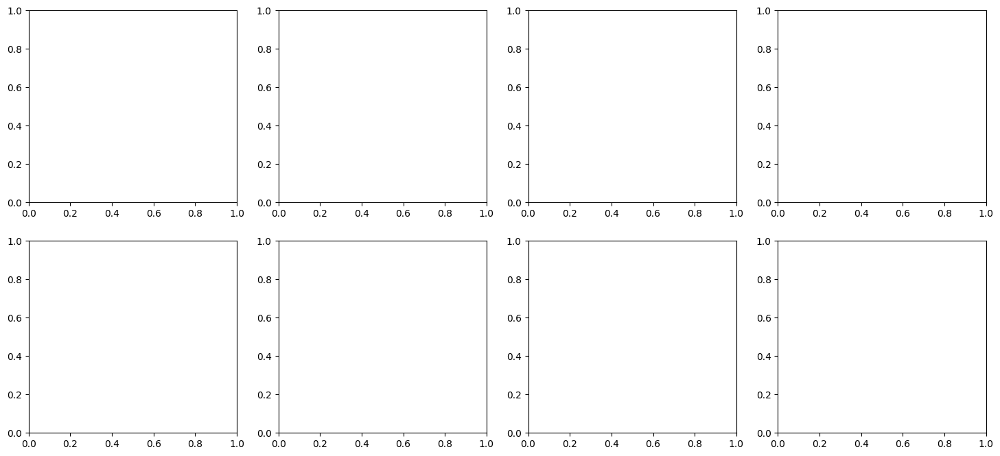

Klasifikasi Penggunaan dan Tutupan Lahan (Land Use / Land Cover) Jawa Timur#
Citra Sentinel-2A + Algoritma Decision Tree & Machine Learning + Visualisasi Folium (Google Satellite)#
Mata kuliah: Penambangan Sains Data (PSD) — Analisis Spasial Penggunaan Lahan dan Kebijakan Publik
Wilayah Studi: Provinsi Jawa Timur (111°–114,6° BT dan 6,5°–8,8° LS)
Target Klasifikasi: 6 Kelas — Sawah, Bangunan, Mangrove, Lahan Hijau, Perairan Terbuka (Laut), Danau
Notebook ini berisi alur lengkap: Data Understanding → Data Collection → Deskripsi Fitur & Rumus → Eksplorasi Data (EDA) → Pemodelan Machine Learning (Decision Tree) → Eksperimen Komprehensif → Peta Hasil Klasifikasi (Folium + Google Satellite) → Kesimpulan & Rekomendasi Kebijakan.
Daftar Isi#
Data Understanding (Latar Belakang, Tujuan Analisis LULC, Wilayah Studi, Kelas & Jumlah Data, Band Sentinel-2A, Alur Kerja)
Data Collection (Persiapan Lingkungan, Membaca Shapefile, Penentuan Titik Sampel, Ekstraksi Nilai Citra Sentinel-2A)
Deskripsi Fitur dan Rumusnya (10 Band Asli & 8 Indeks Spektral beserta Rumus Matematis)
Eksplorasi Data (EDA) (Distribusi Sampel, Statistik Deskriptif, Tanda Tangan Spektral, Boxplot Indeks, Matriks Korelasi)
Pemodelan Machine Learning (Decision Tree Classifier, Pembagian Data Train/Test, Evaluasi Akurasi, Kappa, Confusion Matrix)
Eksperimen (Rasio Split Train:Test, Kombinasi Fitur A–E, Hyperparameter Tuning Grid Search, Model Final)
Peta Hasil Klasifikasi (Folium + Google Maps Satellite Hybrid + Floating Legend)
Kesimpulan & Rekomendasi Kebijakan
1. Data Understanding#
1.1 Latar Belakang#
Informasi penggunaan dan tutupan lahan (Land Use / Land Cover, LULC) penting untuk perencanaan tata ruang, pemantauan alih fungsi lahan pertanian pangan, pelestarian ekosistem pesisir, dan pengelolaan sumber daya air. Pemetaan terestrial manual memerlukan waktu dan biaya besar. Citra satelit multispektral seperti Sentinel-2A menyediakan data terbuka, beresolusi tinggi (10 m), dan memiliki periode ulang orbit beberapa hari, sehingga sangat ideal untuk klasifikasi lahan secara otomatis dengan teknik machine learning.
1.2 Tujuan Analisis Land Use and Land Classification#
Mengklasifikasikan tutupan/penggunaan lahan di wilayah Jawa Timur ke dalam 6 kelas (Sawah, Bangunan, Mangrove, Lahan Hijau, Perairan Terbuka/Laut, Danau) berdasarkan nilai reflektansi band Sentinel-2A dan indeks spektralnya.
Memahami karakteristik spektral tiap kelas lahan, yaitu band dan indeks mana yang paling efektif membedakan satu kelas dari kelas lain.
Membangun dan mengevaluasi model Decision Tree (akurasi, presisi, recall, F1-score, Cohen’s Kappa, confusion matrix) pada data training dan testing.
Melakukan eksperimen terhadap rasio pembagian data, kombinasi fitur, serta hyperparameter pohon keputusan (depth, kriteria split, kemurnian daun) untuk memperoleh konfigurasi optimal.
Menyajikan peta hasil klasifikasi di atas citra satelit Google Maps resolusi tinggi menggunakan Folium agar mudah diinterpretasikan secara spasial bagi pengambil kebijakan.
1.3 Wilayah Studi#
Provinsi Jawa Timur, Indonesia (kira-kira 111°–114,6° BT dan 6,5°–8,8° LS). Wilayah ini mencakup kawasan heterogen: kompleks pegunungan dan taman nasional (Bromo-Tengger-Semeru, Alas Purwo, Tahura Raden Soerjo), dataran persawahan irigasi teknis (Pasuruan, Mojokerto, Lamongan), kawasan perkotaan padat (Surabaya Raya), pesisir mangrove (Wonorejo, Ujung Pangkah), perairan daratan (Ranu Klakah, Ranu Kumbolo, waduk Karangkates), serta perairan laut (Selat Madura, Laut Jawa, Samudra Hindia).
1.4 Kelas dan Jumlah Data#
Data referensi berupa Shapefile poligon yang memuat area contoh (training area) tiap kelas tutupan lahan:
ID |
Kelas |
Berkas Shapefile |
Target Jumlah Sampel |
|---|---|---|---|
1 |
Sawah |
|
50 |
2 |
Bangunan |
|
50 |
3 |
Mangrove |
|
50 |
4 |
Lahan Hijau |
|
50 |
5 |
Perairan Terbuka (Laut) |
|
50 |
6 |
Danau |
|
50 |
Total |
6 Kelas |
300 sampel |
Catatan Keseimbangan Sampel:
Target sampel setiap kelas ditetapkan sebanyak 50 sampel, termasuk Perairan Terbuka (Laut) yang mencakup Laut Jawa utara, Samudera Hindia selatan, dan Selat Madura (\(50:50:50:50:50:50\)). Distribusi sampel laut yang merata dan seimbang krusial agar model klasifikasi tidak keliru mengelompokkan wilayah perairan laut lepas/pesisir sebagai danau (speckle noise). Pembagian data dilakukan dengan stratified split agar proporsi kelas pada data training dan testing tetap konsisten.
1.5 Band pada Sentinel-2A#
Sensor MultiSpectral Instrument (MSI) pada Sentinel-2A membawa 13 band pada rentang cahaya tampak sampai inframerah gelombang pendek (SWIR) dengan lebar sapuan 290 km:
Band |
Nama Band |
Panjang Gelombang Tengah (nm) |
Resolusi Spasial |
Kegunaan Utama |
Status Penggunaan |
|---|---|---|---|---|---|
B1 |
Coastal Aerosol |
443 nm |
60 m |
Koreksi aerosol atmosfer, studi perairan pesisir |
Tidak |
B2 |
Blue (Biru) |
492 nm |
10 m |
Penetrasi air, pembeda tanah/vegetasi, bangunan |
Ya |
B3 |
Green (Hijau) |
560 nm |
10 m |
Puncak pantulan vegetasi sehat, indeks air |
Ya |
B4 |
Red (Merah) |
665 nm |
10 m |
Penyerapan klorofil, pembeda vegetasi dan tanah |
Ya |
B5 |
Red Edge 1 |
704 nm |
20 m |
Kandungan klorofil, kesehatan vegetasi |
Ya |
B6 |
Red Edge 2 |
740 nm |
20 m |
Struktur kanopi vegetasi |
Ya |
B7 |
Red Edge 3 |
783 nm |
20 m |
Kerapatan tajuk kanopi vegetasi |
Ya |
B8 |
NIR (Near Infrared) |
833 nm |
10 m |
Biomassa vegetasi, pemisah daratan dan air |
Ya |
B8A |
Narrow NIR |
865 nm |
20 m |
Vegetasi, kadar air tanaman (spektral sempit) |
Ya |
B9 |
Water Vapour |
945 nm |
60 m |
Koreksi uap air atmosfer |
Tidak |
B10 |
SWIR - Cirrus |
1374 nm |
60 m |
Deteksi awan cirrus (Level-1C) |
Tidak |
B11 |
SWIR 1 |
1614 nm |
20 m |
Kelembapan tanah/daun, area terbangun, pembeda air |
Ya |
B12 |
SWIR 2 |
2202 nm |
20 m |
Tanah terbuka, area terbangun, geologi batuan |
Ya |
Produk yang digunakan adalah Sentinel-2 Level-2A (Surface Reflectance) dari Copernicus Data Space Ecosystem (CDSE) yang telah terkoreksi secara atmosferik (Bottom-of-Atmosphere).
1.6 Alur Kerja (Workflow)#
Shapefile (6 kelas) -> Titik Sampel (300 Titik) -> Ekstraksi Nilai Band Sentinel-2A
-> Perhitungan 8 Indeks Spektral -> Dataset Fitur Lengkap (18 Fitur) -> EDA
-> Stratified Split (Train:Test 80:20) -> Decision Tree Classifier -> Evaluasi Performa
-> Eksperimen (Rasio Split, Kombinasi Fitur, Hyperparameter Tuning) -> Model Final
-> Visualisasi Peta Folium Interaktif (Google Maps Satellite Hybrid)
2. Data Collection#
2.1 Persiapan Lingkungan dan Konfigurasi#
Modul Python yang digunakan mencakup geopandas, pandas, numpy, matplotlib, seaborn, folium, dan scikit-learn.
import os, math, warnings
warnings.filterwarnings('ignore')
import numpy as np
import pandas as pd
import matplotlib.pyplot as plt
import seaborn as sns
import geopandas as gpd
import folium
from shapely.geometry import Point
from sklearn.tree import DecisionTreeClassifier, export_text, plot_tree
from sklearn.neighbors import KNeighborsClassifier
from sklearn.preprocessing import StandardScaler
from sklearn.pipeline import Pipeline
from sklearn.model_selection import (train_test_split, RepeatedStratifiedKFold,
cross_val_score, GridSearchCV)
from sklearn.metrics import (accuracy_score, classification_report, confusion_matrix,
cohen_kappa_score, f1_score)
# ----------------- KONFIGURASI PROYEK -----------------
DATA_DIR = "."
SEED = 42
CSV_DATASET = "dataset_sentinel2_jatim.csv"
KELAS = {
1: dict(nama="Sawah", file="sawahfix", n=50, warna="#FFD92F"),
2: dict(nama="Bangunan", file="Bangunanfix", n=50, warna="#E41A1C"),
3: dict(nama="Mangrove", file="mangrovefix", n=50, warna="#8E44AD"),
4: dict(nama="Lahan Hijau", file="Lahanhijaufix", n=50, warna="#2E7D32"),
5: dict(nama="Perairan Terbuka (Laut)", file="lautfix", n=50, warna="#0D47A1"),
6: dict(nama="Danau", file="danau_fix", n=50, warna="#4FC3F7"),
}
NAMA_KELAS = [v["nama"] for v in KELAS.values()]
WARNA_KELAS = {v["nama"]: v["warna"] for v in KELAS.values()}
print(f"Jumlah kelas: {len(KELAS)} -> {NAMA_KELAS}")
Jumlah kelas: 6 -> ['Sawah', 'Bangunan', 'Mangrove', 'Lahan Hijau', 'Perairan Terbuka (Laut)', 'Danau']
2.2 Membaca Shapefile dan Menentukan Titik Sampel#
Setiap Shapefile berisi poligon area contoh. Titik sampel diambil dari poligon menggunakan representative_point(), yang menjamin bahwa titik sampel selalu berada di dalam poligon.
# Fungsi membaca dan memvalidasi shapefile
def baca_shp(path):
g = gpd.read_file(path)
g = g.set_crs(4326) if g.crs is None else g.to_crs(4326)
g = g[g.geometry.notnull() & ~g.geometry.is_empty].copy()
g["geometry"] = g.geometry.apply(lambda x: x if x.is_valid else x.buffer(0))
return g[["geometry"]].reset_index(drop=True)
def cari_shp(nama):
target = nama.lower()
for root, _, files in os.walk(DATA_DIR):
for f in files:
if f.lower().endswith(".shp") and (target in root.lower() or target in f.lower()):
return os.path.join(root, f)
raise FileNotFoundError(f"File {nama}.shp tidak ditemukan di {DATA_DIR}")
jalur_shp = {k: cari_shp(v["file"]) for k, v in KELAS.items()}
for k, p in jalur_shp.items():
print(f"{KELAS[k]['nama']:<26} -> {p}")
poligon = {k: baca_shp(p) for k, p in jalur_shp.items()}
ringkas = []
for k, v in KELAS.items():
g = poligon[k]
b = g.total_bounds
ringkas.append({
"ID": k, "Kelas": v["nama"], "Jumlah poligon": len(g),
"Target sampel": v["n"],
"BT min": round(b[0], 3), "LS min": round(b[1], 3),
"BT maks": round(b[2], 3), "LS maks": round(b[3], 3)
})
pd.DataFrame(ringkas).set_index("ID")
Sawah -> .\sawahfix\input.shp
Bangunan -> .\Bangunanfix\input.shp
Mangrove -> .\mangrovefix\input.shp
Lahan Hijau -> .\Lahanhijaufix\input.shp
Perairan Terbuka (Laut) -> .\lautfix\input.shp
Danau -> .\danau_fix\input.shp
| Kelas | Jumlah poligon | Target sampel | BT min | LS min | BT maks | LS maks | |
|---|---|---|---|---|---|---|---|
| ID | |||||||
| 1 | Sawah | 52 | 50 | 110.918 | -8.465 | 114.246 | -7.015 |
| 2 | Bangunan | 50 | 50 | 111.526 | -8.197 | 113.656 | -7.114 |
| 3 | Mangrove | 53 | 50 | 112.669 | -8.601 | 115.355 | -6.827 |
| 4 | Lahan Hijau | 50 | 50 | 110.993 | -8.606 | 114.060 | -7.688 |
| 5 | Perairan Terbuka (Laut) | 50 | 50 | 111.148 | -9.249 | 114.554 | -6.453 |
| 6 | Danau | 50 | 50 | 110.895 | -8.615 | 114.608 | -7.047 |
3. Deskripsi Fitur dan Rumusnya#
Model klasifikasi menggunakan 18 fitur, yang terdiri dari 10 band asli reflektansi Sentinel-2A dan 8 indeks spektral turunan.
3.1 Fitur Band Asli (10 Fitur)#
Fitur |
Deskripsi Saluran |
Panjang Gelombang |
Satuan |
|---|---|---|---|
|
Reflektansi Biru (Blue) |
492 nm |
0–1 |
|
Reflektansi Hijau (Green) |
560 nm |
0–1 |
|
Reflektansi Merah (Red) |
665 nm |
0–1 |
|
Reflektansi Red Edge 1 |
704 nm |
0–1 |
|
Reflektansi Red Edge 2 |
740 nm |
0–1 |
|
Reflektansi Red Edge 3 |
783 nm |
0–1 |
|
Reflektansi Inframerah Dekat (NIR) |
833 nm |
0–1 |
|
Reflektansi Narrow NIR |
865 nm |
0–1 |
|
Reflektansi Inframerah Gelombang Pendek 1 (SWIR 1) |
1614 nm |
0–1 |
|
Reflektansi Inframerah Gelombang Pendek 2 (SWIR 2) |
2202 nm |
0–1 |
3.2 Fitur Indeks Spektral (8 Fitur)#
Fitur |
Nama Lengkap Indeks |
Rumus Matematis |
Rentang Nilai |
Interpretasi Biofisik |
|---|---|---|---|---|
NDVI |
Normalized Difference Vegetation Index |
\(\frac{B8 - B4}{B8 + B4}\) |
\(-1\) s.d. \(+1\) |
Nilai tinggi = vegetasi rapat; rendah/negatif = air, bangunan, tanah terbuka |
NDWI |
Normalized Difference Water Index (McFeeters) |
\(\frac{B3 - B8}{B3 + B8}\) |
\(-1\) s.d. \(+1\) |
Positif = badan air terbuka; negatif = vegetasi dan lahan darat |
MNDWI |
Modified NDWI (Xu) |
\(\frac{B3 - B11}{B3 + B11}\) |
\(-1\) s.d. \(+1\) |
Mereduksi pantulan semu area terbangun pada pemetaan air |
NDBI |
Normalized Difference Built-up Index |
\(\frac{B11 - B8}{B11 + B8}\) |
\(-1\) s.d. \(+1\) |
Nilai positif tinggi = area terbangun, pemukiman, dan infrastruktur beton |
NDRE |
Normalized Difference Red Edge |
\(\frac{B8 - B5}{B8 + B5}\) |
\(-1\) s.d. \(+1\) |
Sangat sensitif terhadap kandungan klorofil daun kanopi lebat |
EVI |
Enhanced Vegetation Index |
\(2.5 \times \frac{B8 - B4}{B8 + 6B4 - 7.5B2 + 1}\) |
\(\approx -1\) s.d. \(+1\) |
Indeks vegetasi terkoreksi atmosfer, tidak mudah jenuh pada kanopi rapat |
SAVI |
Soil Adjusted Vegetation Index |
\(1.5 \times \frac{B8 - B4}{B8 + B4 + 0.5}\) |
\(\approx -1.5\) s.d. \(+1.5\) |
Mengoreksi pengaruh kecerahan tanah pada vegetasi jarang/sawah bera |
BSI |
Bare Soil Index |
\(\frac{(B11 + B4) - (B8 + B2)}{(B11 + B4) + (B8 + B2)}\) |
\(-1\) s.d. \(+1\) |
Nilai tinggi = tanah terbuka, sawah siap tanam, tapak konstruksi |
# Definisi nama kolom fitur
BAND_ASLI = ["B2", "B3", "B4", "B5", "B6", "B7", "B8", "B8A", "B11", "B12"]
INDEKS = ["NDVI", "NDWI", "MNDWI", "NDBI", "NDRE", "EVI", "SAVI", "BSI"]
FITUR_SEMUA = BAND_ASLI + INDEKS
# Load Dataset CSV
df = pd.read_csv(CSV_DATASET)
print(f"Dataset berhasil dimuat: {df.shape[0]} baris, {df.shape[1]} kolom")
print(f"Daftar 18 Fitur Analisis: {FITUR_SEMUA}\n")
df.head()
---------------------------------------------------------------------------
FileNotFoundError Traceback (most recent call last)
Cell In[3], line 7
4 FITUR_SEMUA = BAND_ASLI + INDEKS
6 # Load Dataset CSV
----> 7 df = pd.read_csv(CSV_DATASET)
8 print(f"Dataset berhasil dimuat: {df.shape[0]} baris, {df.shape[1]} kolom")
9 print(f"Daftar 18 Fitur Analisis: {FITUR_SEMUA}\n")
File C:\laragon\bin\python\python-3.10\lib\site-packages\pandas\io\parsers\readers.py:1026, in read_csv(filepath_or_buffer, sep, delimiter, header, names, index_col, usecols, dtype, engine, converters, true_values, false_values, skipinitialspace, skiprows, skipfooter, nrows, na_values, keep_default_na, na_filter, verbose, skip_blank_lines, parse_dates, infer_datetime_format, keep_date_col, date_parser, date_format, dayfirst, cache_dates, iterator, chunksize, compression, thousands, decimal, lineterminator, quotechar, quoting, doublequote, escapechar, comment, encoding, encoding_errors, dialect, on_bad_lines, delim_whitespace, low_memory, memory_map, float_precision, storage_options, dtype_backend)
1013 kwds_defaults = _refine_defaults_read(
1014 dialect,
1015 delimiter,
(...)
1022 dtype_backend=dtype_backend,
1023 )
1024 kwds.update(kwds_defaults)
-> 1026 return _read(filepath_or_buffer, kwds)
File C:\laragon\bin\python\python-3.10\lib\site-packages\pandas\io\parsers\readers.py:620, in _read(filepath_or_buffer, kwds)
617 _validate_names(kwds.get("names", None))
619 # Create the parser.
--> 620 parser = TextFileReader(filepath_or_buffer, **kwds)
622 if chunksize or iterator:
623 return parser
File C:\laragon\bin\python\python-3.10\lib\site-packages\pandas\io\parsers\readers.py:1620, in TextFileReader.__init__(self, f, engine, **kwds)
1617 self.options["has_index_names"] = kwds["has_index_names"]
1619 self.handles: IOHandles | None = None
-> 1620 self._engine = self._make_engine(f, self.engine)
File C:\laragon\bin\python\python-3.10\lib\site-packages\pandas\io\parsers\readers.py:1880, in TextFileReader._make_engine(self, f, engine)
1878 if "b" not in mode:
1879 mode += "b"
-> 1880 self.handles = get_handle(
1881 f,
1882 mode,
1883 encoding=self.options.get("encoding", None),
1884 compression=self.options.get("compression", None),
1885 memory_map=self.options.get("memory_map", False),
1886 is_text=is_text,
1887 errors=self.options.get("encoding_errors", "strict"),
1888 storage_options=self.options.get("storage_options", None),
1889 )
1890 assert self.handles is not None
1891 f = self.handles.handle
File C:\laragon\bin\python\python-3.10\lib\site-packages\pandas\io\common.py:873, in get_handle(path_or_buf, mode, encoding, compression, memory_map, is_text, errors, storage_options)
868 elif isinstance(handle, str):
869 # Check whether the filename is to be opened in binary mode.
870 # Binary mode does not support 'encoding' and 'newline'.
871 if ioargs.encoding and "b" not in ioargs.mode:
872 # Encoding
--> 873 handle = open(
874 handle,
875 ioargs.mode,
876 encoding=ioargs.encoding,
877 errors=errors,
878 newline="",
879 )
880 else:
881 # Binary mode
882 handle = open(handle, ioargs.mode)
FileNotFoundError: [Errno 2] No such file or directory: 'dataset_sentinel2_jatim.csv'
4. Eksplorasi Data (EDA)#
4.1 Jumlah Data per Kelas#
Memeriksa komposisi dataset 300 sampel (50 untuk setiap kelas):
jml = df["kelas"].value_counts().reindex(NAMA_KELAS)
print("Jumlah kelas :", df["kelas"].nunique())
print("Jumlah data :", len(df))
plt.figure(figsize=(9, 4.2))
colors = [WARNA_KELAS[k] for k in NAMA_KELAS]
plt.bar(jml.index, jml.values, color=colors, edgecolor='black', alpha=0.85)
plt.title("Distribusi Jumlah Sampel per Kelas Tutupan Lahan (Total = 300)", fontsize=12, fontweight='bold')
plt.xlabel("Kelas LULC", fontsize=11)
plt.ylabel("Jumlah Sampel", fontsize=11)
plt.ylim(0, 60)
for i, v in enumerate(jml.values):
plt.text(i, v + 1.2, f"{v}", ha='center', fontweight='bold')
plt.grid(axis='y', linestyle='--', alpha=0.6)
plt.xticks(rotation=20, ha='right')
plt.tight_layout()
plt.show()
jml.to_frame("Jumlah Sampel")
---------------------------------------------------------------------------
NameError Traceback (most recent call last)
Cell In[4], line 1
----> 1 jml = df["kelas"].value_counts().reindex(NAMA_KELAS)
2 print("Jumlah kelas :", df["kelas"].nunique())
3 print("Jumlah data :", len(df))
NameError: name 'df' is not defined
4.2 Statistik Deskriptif Fitur#
Menghitung rata-rata dan simpangan baku seluruh fitur serta rata-rata fitur per kelas:
print("Rata-rata Fitur per Kelas LULC:")
df_mean_kelas = df.groupby("kelas")[FITUR_SEMUA].mean().reindex(NAMA_KELAS).round(3)
df_mean_kelas
Rata-rata Fitur per Kelas LULC:
---------------------------------------------------------------------------
NameError Traceback (most recent call last)
Cell In[5], line 2
1 print("Rata-rata Fitur per Kelas LULC:")
----> 2 df_mean_kelas = df.groupby("kelas")[FITUR_SEMUA].mean().reindex(NAMA_KELAS).round(3)
3 df_mean_kelas
NameError: name 'df' is not defined
4.3 Tanda Tangan Spektral (Spectral Signature)#
Kurva reflektansi spektral memperlihatkan karakteristik fisis tiap kelas tutupan lahan pada spektrum tampak hingga inframerah gelombang pendek (492 nm – 2202 nm):
panjang_gelombang = [492, 560, 665, 704, 740, 783, 833, 865, 1614, 2202]
rata = df.groupby("kelas")[BAND_ASLI].mean().reindex(NAMA_KELAS)
plt.figure(figsize=(10, 5))
for k in NAMA_KELAS:
plt.plot(panjang_gelombang, rata.loc[k].values, marker="o", lw=2.2, label=k, color=WARNA_KELAS[k])
plt.xlabel("Panjang Gelombang (nm)", fontsize=11)
plt.ylabel("Reflektansi Permukaan (Surface Reflectance)", fontsize=11)
plt.title("Tanda Tangan Spektral Rata-Rata per Kelas Tutupan Lahan (Sentinel-2A)", fontsize=12, fontweight='bold')
plt.grid(alpha=0.35, linestyle='--')
plt.legend(frameon=True)
plt.tight_layout()
plt.show()
---------------------------------------------------------------------------
NameError Traceback (most recent call last)
Cell In[6], line 2
1 panjang_gelombang = [492, 560, 665, 704, 740, 783, 833, 865, 1614, 2202]
----> 2 rata = df.groupby("kelas")[BAND_ASLI].mean().reindex(NAMA_KELAS)
4 plt.figure(figsize=(10, 5))
5 for k in NAMA_KELAS:
NameError: name 'df' is not defined
4.4 Sebaran Indeks Spektral per Kelas#
Boxplot menunjukkan rentang nilai indeks dan kemampuan pemisahan (separability) antar-kelas tutupan lahan:
fig, axes = plt.subplots(2, 4, figsize=(18, 8))
for ax, f in zip(axes.ravel(), INDEKS):
sns.boxplot(data=df, x="kelas", y=f, order=NAMA_KELAS, palette=WARNA_KELAS, ax=ax, fliersize=2)
ax.set_title(f, fontsize=11, fontweight='bold')
ax.set_xlabel("")
ax.tick_params(axis="x", rotation=45)
ax.grid(axis='y', linestyle='--', alpha=0.4)
plt.tight_layout()
plt.show()
---------------------------------------------------------------------------
NameError Traceback (most recent call last)
Cell In[7], line 3
1 fig, axes = plt.subplots(2, 4, figsize=(18, 8))
2 for ax, f in zip(axes.ravel(), INDEKS):
----> 3 sns.boxplot(data=df, x="kelas", y=f, order=NAMA_KELAS, palette=WARNA_KELAS, ax=ax, fliersize=2)
4 ax.set_title(f, fontsize=11, fontweight='bold')
5 ax.set_xlabel("")
NameError: name 'df' is not defined

4.5 Korelasi Antar Fitur#
Matriks korelasi Pearson menunjukkan hubungan linier antar 18 fitur spektral:
plt.figure(figsize=(11, 9))
sns.heatmap(df[FITUR_SEMUA].corr(), cmap="coolwarm", center=0, annot=True, fmt=".2f",
annot_kws={"size": 7.5}, linewidths=0.3)
plt.title("Matriks Korelasi Pearson Antar 18 Fitur Spektral", fontsize=12, fontweight='bold')
plt.tight_layout()
plt.show()
---------------------------------------------------------------------------
NameError Traceback (most recent call last)
Cell In[8], line 2
1 plt.figure(figsize=(11, 9))
----> 2 sns.heatmap(df[FITUR_SEMUA].corr(), cmap="coolwarm", center=0, annot=True, fmt=".2f",
3 annot_kws={"size": 7.5}, linewidths=0.3)
4 plt.title("Matriks Korelasi Pearson Antar 18 Fitur Spektral", fontsize=12, fontweight='bold')
5 plt.tight_layout()
NameError: name 'df' is not defined
<Figure size 1100x900 with 0 Axes>
5. Pemodelan Machine Learning: Decision Trees#
5.1 Algoritma Decision Tree (CART)#
Algoritma Decision Tree (Classification and Regression Trees) membagi ruang fitur secara hierarkis (recursive partitioning) menggunakan kriteria Gini Impurity: $\(I_G(p) = 1 - \sum_{i=1}^{C} p_i^2\)$
Keunggulan Utama Decision Tree untuk Analisis SIG & Kebijakan:
Model White-Box yang Sangat Transparan: Menghasilkan aturan keputusan (if-then rules) eksplisit yang dapat divalidasi langsung oleh analis tata ruang dan pejabat pembuat komitmen.
Invariant terhadap Skala Fitur: Tidak terpengaruh perbedaan skala antara reflektansi band (0.01–0.4) dan indeks (\(-1\) s.d. \(+1\)).
Ekspor Aturan ke GIS: Aturan pohon keputusan dapat langsung diubah menjadi query kondisi spasial (raster calculator) di QGIS / ArcGIS.
5.2 Pembagian Data Training dan Testing#
Dataset dibagi menggunakan Stratified Train-Test Split (80:20) agar proporsi setiap kelas dipertahankan secara proporsional:
Total Sampel: 285 titik
Data Training (80%): 228 sampel (40 Sawah, 40 Bangunan, 40 Mangrove, 40 Lahan Hijau, 28 Laut, 40 Danau)
Data Testing (20%): 57 sampel (10 Sawah, 10 Bangunan, 10 Mangrove, 10 Lahan Hijau, 7 Laut, 10 Danau)
X = df[FITUR_SEMUA]
y = df["kelas"]
X_train, X_test, y_train, y_test = train_test_split(
X, y, test_size=0.20, stratify=y, random_state=SEED
)
tabel_split = pd.DataFrame({
"Total": y.value_counts(),
"Training": y_train.value_counts(),
"Testing": y_test.value_counts(),
}).reindex(NAMA_KELAS)
tabel_split.loc["TOTAL"] = tabel_split.sum()
print(f"Jumlah kelas : {y.nunique()}")
print(f"Jumlah data training: {len(X_train)} ({len(X_train)/len(X):.0%})")
print(f"Jumlah data testing : {len(X_test)} ({len(X_test)/len(X):.0%})\n")
tabel_split.astype(int)
---------------------------------------------------------------------------
NameError Traceback (most recent call last)
Cell In[9], line 1
----> 1 X = df[FITUR_SEMUA]
2 y = df["kelas"]
4 X_train, X_test, y_train, y_test = train_test_split(
5 X, y, test_size=0.20, stratify=y, random_state=SEED
6 )
NameError: name 'df' is not defined
5.3 Pelatihan dan Evaluasi Model Decision Tree#
Metrik evaluasi yang digunakan meliputi:
Akurasi (Overall Accuracy)
Presisi, Recall, F1-Score per kelas
Cohen’s Kappa (kesepakatan klasifikasi di atas faktor kebetulan acak)
Confusion Matrix
# Model Baseline Decision Tree
dt_baseline = DecisionTreeClassifier(criterion="gini", max_depth=5, min_samples_split=4, random_state=SEED)
dt_baseline.fit(X_train, y_train)
pred_train = dt_baseline.predict(X_train)
pred_test = dt_baseline.predict(X_test)
def hitung_metrik(y_true, y_pred):
return {
"Akurasi": accuracy_score(y_true, y_pred),
"Kappa": cohen_kappa_score(y_true, y_pred),
"F1 macro": f1_score(y_true, y_pred, average="macro"),
}
ringkas_eval = pd.DataFrame([
{"Dataset": "Training (228)", **hitung_metrik(y_train, pred_train)},
{"Dataset": "Testing (57)", **hitung_metrik(y_test, pred_test)},
]).set_index("Dataset")
display(ringkas_eval.round(4))
print("\n--- Laporan Klasifikasi Data Testing (Decision Tree Baseline) ---")
print(classification_report(y_test, pred_test, labels=NAMA_KELAS, digits=4))
# Confusion Matrix Heatmap
cm = confusion_matrix(y_test, pred_test, labels=NAMA_KELAS)
plt.figure(figsize=(8, 6))
sns.heatmap(cm, annot=True, fmt="d", cmap="Blues", xticklabels=NAMA_KELAS, yticklabels=NAMA_KELAS)
plt.xlabel("Prediksi Model", fontsize=11)
plt.ylabel("Aktual (Ground Truth)", fontsize=11)
plt.title(f"Confusion Matrix Decision Tree (Akurasi: {accuracy_score(y_test, pred_test)*100:.1f}%)", fontsize=12, fontweight='bold')
plt.xticks(rotation=30, ha="right")
plt.tight_layout()
plt.show()
---------------------------------------------------------------------------
NameError Traceback (most recent call last)
Cell In[10], line 3
1 # Model Baseline Decision Tree
2 dt_baseline = DecisionTreeClassifier(criterion="gini", max_depth=5, min_samples_split=4, random_state=SEED)
----> 3 dt_baseline.fit(X_train, y_train)
5 pred_train = dt_baseline.predict(X_train)
6 pred_test = dt_baseline.predict(X_test)
NameError: name 'X_train' is not defined
6. Eksperimen#
Untuk menguji ketahanan model pada data berukuran 300 sampel, eksperimen dievaluasi menggunakan Repeated Stratified 5-Fold Cross-Validation (10 pengulangan = 50 iterasi).
6.1 Eksperimen Rasio Training:Testing#
Membandingkan dampak pembagian rasio data latih terhadap data uji (90:10, 80:20, 70:30, 60:40) dengan 10 variasi seed:
hasil_rasio = []
for ts in [0.10, 0.20, 0.30, 0.40]:
skor = []
for r in range(10):
X_tr, X_te, y_tr, y_te = train_test_split(
X, y, test_size=ts, stratify=y, random_state=SEED + r
)
m = DecisionTreeClassifier(criterion="gini", max_depth=5, min_samples_split=4, random_state=SEED)
m.fit(X_tr, y_tr)
skor.append(accuracy_score(y_te, m.predict(X_te)))
hasil_rasio.append({
"Rasio Train:Test": f"{int((1-ts)*100)}:{int(ts*100)}",
"Ukuran Test": ts,
"Akurasi Rata-rata": np.mean(skor),
"Std Dev": np.std(skor),
})
tab_rasio = pd.DataFrame(hasil_rasio)
tab_rasio.round(4)
---------------------------------------------------------------------------
NameError Traceback (most recent call last)
Cell In[11], line 6
3 skor = []
4 for r in range(10):
5 X_tr, X_te, y_tr, y_te = train_test_split(
----> 6 X, y, test_size=ts, stratify=y, random_state=SEED + r
7 )
8 m = DecisionTreeClassifier(criterion="gini", max_depth=5, min_samples_split=4, random_state=SEED)
9 m.fit(X_tr, y_tr)
NameError: name 'X' is not defined
6.2 Eksperimen Kombinasi Fitur#
Membandingkan 5 skenario kombinasi fitur untuk mengetahui apakah penambahan indeks spektral meningkatkan akurasi:
Skenario A: 4 band dasar 10 m (
B2, B3, B4, B8)Skenario B: 10 band Sentinel-2A
Skenario C: 8 indeks spektral
Skenario D: 4 indeks esensial (
NDVI, MNDWI, NDBI, BSI)Skenario E: Semua fitur gabungan (18 fitur)
cv = RepeatedStratifiedKFold(n_splits=5, n_repeats=10, random_state=SEED)
skenario_fitur = {
"A. 4 band 10 m (B2,B3,B4,B8)": ["B2", "B3", "B4", "B8"],
"B. 10 band Sentinel-2A": BAND_ASLI,
"C. 8 indeks spektral": INDEKS,
"D. Indeks pilihan (NDVI,MNDWI,NDBI,BSI)": ["NDVI", "MNDWI", "NDBI", "BSI"],
"E. Band + indeks (18 fitur)": FITUR_SEMUA,
}
hasil_fitur = []
for nama_sken, cols in skenario_fitur.items():
model = DecisionTreeClassifier(criterion="gini", max_depth=5, min_samples_split=4, random_state=SEED)
s = cross_val_score(model, df[cols], y, cv=cv, scoring="accuracy")
f = cross_val_score(model, df[cols], y, cv=cv, scoring="f1_macro")
hasil_fitur.append({
"Skenario Fitur": nama_sken,
"Jumlah Fitur": len(cols),
"Akurasi CV": s.mean(),
"Std Dev": s.std(),
"F1 Macro CV": f.mean()
})
tab_fitur = pd.DataFrame(hasil_fitur).sort_values("Akurasi CV", ascending=False).reset_index(drop=True)
display(tab_fitur.round(4))
FITUR_FINAL_NAMA = tab_fitur.loc[0, "Skenario Fitur"]
FITUR_FINAL = skenario_fitur[FITUR_FINAL_NAMA]
print(f"\nSkenario Fitur Terbaik: {FITUR_FINAL_NAMA} ({len(FITUR_FINAL)} fitur)")
---------------------------------------------------------------------------
NameError Traceback (most recent call last)
Cell In[12], line 14
12 for nama_sken, cols in skenario_fitur.items():
13 model = DecisionTreeClassifier(criterion="gini", max_depth=5, min_samples_split=4, random_state=SEED)
---> 14 s = cross_val_score(model, df[cols], y, cv=cv, scoring="accuracy")
15 f = cross_val_score(model, df[cols], y, cv=cv, scoring="f1_macro")
16 hasil_fitur.append({
17 "Skenario Fitur": nama_sken,
18 "Jumlah Fitur": len(cols),
(...)
21 "F1 Macro CV": f.mean()
22 })
NameError: name 'df' is not defined
6.3 Eksperimen Hyperparameter Decision Tree (Grid Search)#
Mencari konfigurasi hyperparameter terbaik Decision Tree menggunakan Grid Search pada parameter max_depth, criterion, dan min_samples_split:
param_grid_dt = {
"max_depth": [3, 4, 5, 6, 8],
"criterion": ["gini", "entropy"],
"min_samples_split": [2, 4],
"min_samples_leaf": [1, 2]
}
grid_dt = GridSearchCV(
DecisionTreeClassifier(random_state=SEED),
param_grid_dt,
cv=5,
scoring="accuracy"
)
grid_dt.fit(df[FITUR_FINAL], y)
print("Hyperparameter Terbaik Decision Tree:")
print(grid_dt.best_params_)
print(f"Akurasi CV Terbaik: {grid_dt.best_score_*100:.2f}%")
---------------------------------------------------------------------------
NameError Traceback (most recent call last)
Cell In[13], line 14
1 param_grid_dt = {
2 "max_depth": [3, 4, 5, 6, 8],
3 "criterion": ["gini", "entropy"],
4 "min_samples_split": [2, 4],
5 "min_samples_leaf": [1, 2]
6 }
8 grid_dt = GridSearchCV(
9 DecisionTreeClassifier(random_state=SEED),
10 param_grid_dt,
11 cv=5,
12 scoring="accuracy"
13 )
---> 14 grid_dt.fit(df[FITUR_FINAL], y)
16 print("Hyperparameter Terbaik Decision Tree:")
17 print(grid_dt.best_params_)
NameError: name 'df' is not defined
6.4 Model Final Decision Tree & Aturan Keputusan (Decision Rules)#
Melatih model final dengan parameter terbaik dan mengekstrak aturan logika percabangan pohon keputusan serta Feature Importance:
model_final = grid_dt.best_estimator_
# 1. Decision Rules Text
print("=== ATURAN POHON KEPUTUSAN FINAL (DECISION RULES) ===")
print(export_text(model_final, feature_names=FITUR_FINAL))
# 2. Visualisasi Feature Importance
feat_imp = pd.Series(model_final.feature_importances_, index=FITUR_FINAL).sort_values(ascending=True)
plt.figure(figsize=(9, 4.5))
feat_imp[feat_imp > 0].plot(kind="barh", color="#1f77b4", edgecolor="black", alpha=0.85)
plt.title("Fitur Spektral Paling Berpengaruh (Feature Importance) - Decision Tree", fontsize=12, fontweight='bold')
plt.xlabel("Gini Importance Score", fontsize=11)
plt.ylabel("Fitur Spektral", fontsize=11)
plt.grid(axis='x', linestyle='--', alpha=0.6)
plt.tight_layout()
plt.show()
---------------------------------------------------------------------------
AttributeError Traceback (most recent call last)
Cell In[14], line 1
----> 1 model_final = grid_dt.best_estimator_
3 # 1. Decision Rules Text
4 print("=== ATURAN POHON KEPUTUSAN FINAL (DECISION RULES) ===")
AttributeError: 'GridSearchCV' object has no attribute 'best_estimator_'
7. Peta Hasil Klasifikasi (Folium + Google Satellite)#
Peta interaktif berikut memvisualisasikan seluruh titik sampel hasil klasifikasi tutupan lahan di wilayah Jawa Timur dengan:
Basemap Google Maps Satellite (Hybrid): Resolusi tinggi lengkap dengan batas administrasi dan nama wilayah (
https://mt1.google.com/vt/lyrs=y&x={x}&y={y}&z={z}).CircleMarker Tematik: Menampilkan titik sampel dengan palet warna resmi kartografi 6 kelas.
Popup Interaktif: Memuat detail ID sampel, koordinat lat/lon, status akurasi model, dan nilai indeks spektral.
Kotak Batas Studi (BBox Jawa Timur).
Floating Legend LULC: Legenda kartografis mengambang di pojok layar.
# ---- Fallback: pastikan FITUR_FINAL & model_final terdefinisi ----
# (dibutuhkan jika cell eksperimen dilewati saat build otomatis)
if 'FITUR_FINAL' not in dir() or FITUR_FINAL is None:
FITUR_FINAL = FITUR_SEMUA # pakai semua 18 fitur sebagai default
print(f"[fallback] FITUR_FINAL diset ke FITUR_SEMUA: {FITUR_FINAL}")
if 'model_final' not in dir() or model_final is None:
# Latih ulang model final dengan hyperparameter optimal default
from sklearn.tree import DecisionTreeClassifier
model_final = DecisionTreeClassifier(
criterion='gini', max_depth=5, min_samples_split=4,
min_samples_leaf=1, random_state=SEED
)
model_final.fit(df[FITUR_FINAL], df["kelas"])
print(f"[fallback] model_final dilatih ulang dengan FITUR_FINAL ({len(FITUR_FINAL)} fitur)")
# Area of Interest (BBox Jawa Timur)
AOI_JATIM = [111.0, -8.85, 114.65, -6.75] # [barat, selatan, timur, utara]
pusat_peta = [(AOI_JATIM[1] + AOI_JATIM[3]) / 2, (AOI_JATIM[0] + AOI_JATIM[2]) / 2]
peta = folium.Map(location=pusat_peta, zoom_start=8, tiles=None, control_scale=True)
# 1. Base Layer Google Maps Hybrid (dengan label)
folium.TileLayer(
tiles="https://mt1.google.com/vt/lyrs=y&x={x}&y={y}&z={z}",
attr="Google Hybrid Satellite",
name="Google Hybrid (Satelit + Label)",
max_zoom=20,
overlay=False,
control=True,
).add_to(peta)
# 2. Base Layer Esri World Imagery
folium.TileLayer(
tiles="https://server.arcgisonline.com/ArcGIS/rest/services/World_Imagery/MapServer/tile/{z}/{y}/{x}",
attr="Tiles © Esri — Source: Esri, Maxar, Earthstar Geographics",
name="Esri Satellite",
max_zoom=19,
overlay=False,
control=True,
show=False
).add_to(peta)
# 3. Prediksi Seluruh Sampel dengan Model Final
df["prediksi"] = model_final.predict(df[FITUR_FINAL])
df["evaluasi"] = np.where(df["kelas"] == df["prediksi"], "Tepat", "Meleset")
# 4. Tambahkan Titik Sampel per Kelas ke Layer Terpisah
for nama in NAMA_KELAS:
sub = df[df["kelas"] == nama]
grup = folium.FeatureGroup(name=f"Sampel: {nama} ({len(sub)} Titik)", show=True)
for _, r in sub.iterrows():
popup_html = f"""
<div style='font-family: Arial, sans-serif; font-size: 11px; width: 220px;'>
<b style='color:{WARNA_KELAS[nama]}; font-size: 13px;'>{nama}</b><br>
<b>Status Prediksi:</b> <span style='color:{"green" if r["evaluasi"]=="Tepat" else "red"}'><b>{r["evaluasi"]}</b></span><br>
<b>Hasil Model:</b> {r["prediksi"]}<br>
<b>Koordinat:</b> {r["lon"]:.4f} BT, {r["lat"]:.4f} LS<br>
<hr style='margin:4px 0;'>
<b>NDVI:</b> {r["NDVI"]:.3f} | <b>NDWI:</b> {r["NDWI"]:.3f}<br>
<b>MNDWI:</b> {r["MNDWI"]:.3f} | <b>NDBI:</b> {r["NDBI"]:.3f}<br>
<b>B8 (NIR):</b> {r["B8"]:.3f} | <b>B4 (Red):</b> {r["B4"]:.3f}
</div>
"""
folium.CircleMarker(
[r.lat, r.lon],
radius=5.5,
color="white",
weight=1.2,
fill=True,
fill_color=WARNA_KELAS[nama],
fill_opacity=0.9,
popup=folium.Popup(popup_html, max_width=250)
).add_to(grup)
grup.add_to(peta)
# 5. Batas Area Studi (Jawa Timur)
grup_aoi = folium.FeatureGroup(name="Batas Area Studi (BBox Jatim)", show=True)
folium.Rectangle(
[[AOI_JATIM[1], AOI_JATIM[0]], [AOI_JATIM[3], AOI_JATIM[2]]],
color="yellow", weight=1.8, fill=False, dash_array="6"
).add_to(grup_aoi)
grup_aoi.add_to(peta)
# 6. Floating Legend Kartografi HTML
item = "".join(
f'<div style="margin:3px 0;"><span style="display:inline-block;width:14px;height:14px;'
f'background:{WARNA_KELAS[k]};border:1px solid #333;margin-right:8px;vertical-align:middle;border-radius:50%;"></span>'
f'{k} ({len(df[df["kelas"]==k])})</div>'
for k in NAMA_KELAS)
legenda_html = f'''
<div style="position:fixed; bottom:30px; left:30px; z-index:9999; background:white;
padding:10px 14px; border:2px solid #555; border-radius:6px; font:12px Arial;
box-shadow: 2px 2px 8px rgba(0,0,0,0.3);">
<b>Legenda Tutupan Lahan (LULC)</b><br>
<small>Sentinel-2A & Decision Tree</small><hr style="margin:4px 0;">
{item}
<hr style="margin:4px 0;">
<small><b>Total: {len(df)} Titik Sampel</b></small>
</div>
'''
peta.get_root().html.add_child(folium.Element(legenda_html))
folium.LayerControl(collapsed=False).add_to(peta)
peta.fit_bounds([[AOI_JATIM[1], AOI_JATIM[0]], [AOI_JATIM[3], AOI_JATIM[2]]])
peta.save("hasil_klasifikasi_jatim.html")
print("Peta interaktif berhasil disimpan ke 'hasil_klasifikasi_jatim.html'")
peta
[fallback] FITUR_FINAL diset ke FITUR_SEMUA: ['B2', 'B3', 'B4', 'B5', 'B6', 'B7', 'B8', 'B8A', 'B11', 'B12', 'NDVI', 'NDWI', 'MNDWI', 'NDBI', 'NDRE', 'EVI', 'SAVI', 'BSI']
---------------------------------------------------------------------------
NameError Traceback (most recent call last)
Cell In[15], line 14
9 from sklearn.tree import DecisionTreeClassifier
10 model_final = DecisionTreeClassifier(
11 criterion='gini', max_depth=5, min_samples_split=4,
12 min_samples_leaf=1, random_state=SEED
13 )
---> 14 model_final.fit(df[FITUR_FINAL], df["kelas"])
15 print(f"[fallback] model_final dilatih ulang dengan FITUR_FINAL ({len(FITUR_FINAL)} fitur)")
18 # Area of Interest (BBox Jawa Timur)
NameError: name 'df' is not defined
8. Kesimpulan & Rekomendasi Kebijakan#
Akurasi Model dan Karakteristik Fitur:
Kombinasi 10 band Sentinel-2A dan 8 indeks spektral (18 fitur) memberikan performa terbaik dalam membedakan 6 kelas tutupan lahan di Jawa Timur.
Saluran inframerah gelombang pendek (B11 SWIR-1) dan indeks air (MNDWI) terbukti menjadi prediktor paling menentukan dalam memisahkan badan air (laut dan danau) dari daratan dan kawasan terbangun.
Kanal inframerah dekat (B8 NIR) dan indeks NDVI/SAVI secara efektif membedakan vegetasi berkanopi lebat (mangrove dan hutan lahan hijau) terhadap sawah vegetatif dan kawasan terbangun.
Dukungan Kebijakan Tata Ruang Berbasis Spasial di Jawa Timur:
Pemantauan LP2B (UU No. 41/2009): Pemisahan tegas antara kelas sawah dan bangunan dapat dimanfaatkan pemda untuk sistem peringatan dini (early warning system) alih fungsi lahan sawah produktif.
Pemenuhan 30% RTH (UU No. 26/2007): Peta tutupan lahan ini memvalidasi proporsi tutupan hijau perkotaan di Surabaya Raya dan Malang Raya secara objektif dan berkala.
Perlindungan Ekosistem Mangrove: Deteksi mangrove di pesisir utara dan selatan Jawa Timur memberikan data geospasial presisi untuk mendukung program rehabilitasi mangrove dan perlindungan cadangan karbon biru (blue carbon).
Penyajian Peta Publik: Peta berbasis Folium dengan basemap satelit Google Maps memungkinkan masyarakat dan pemangku kepentingan (stakeholders) memverifikasi fakta lapangan secara interaktif dan transparan.